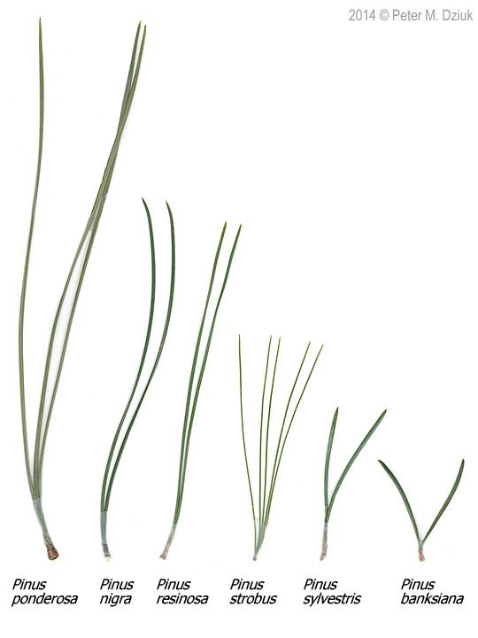
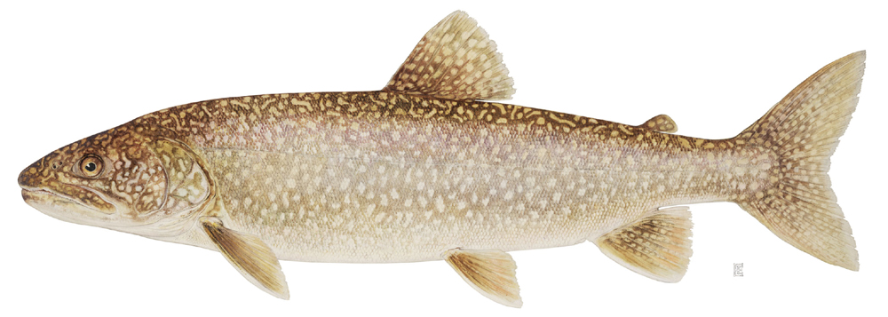
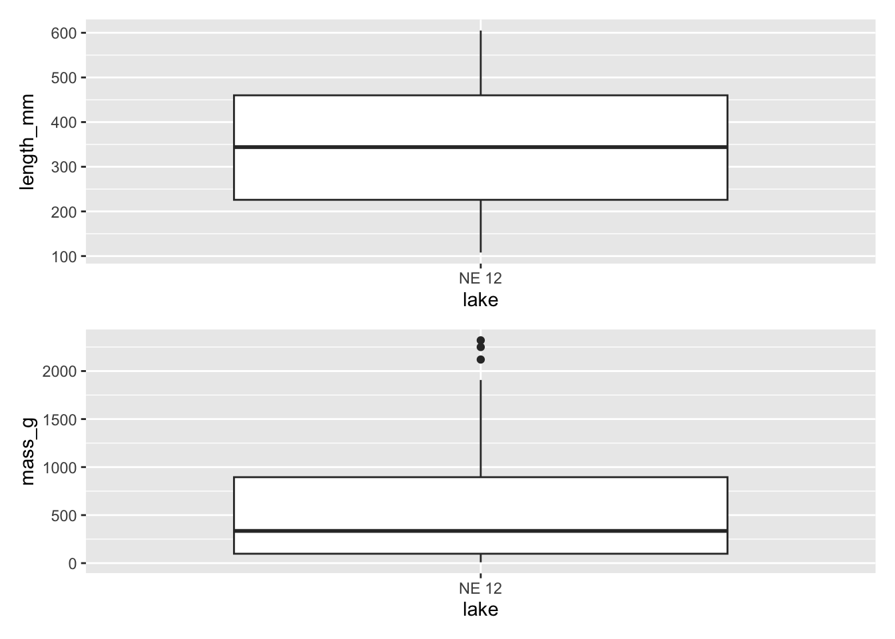
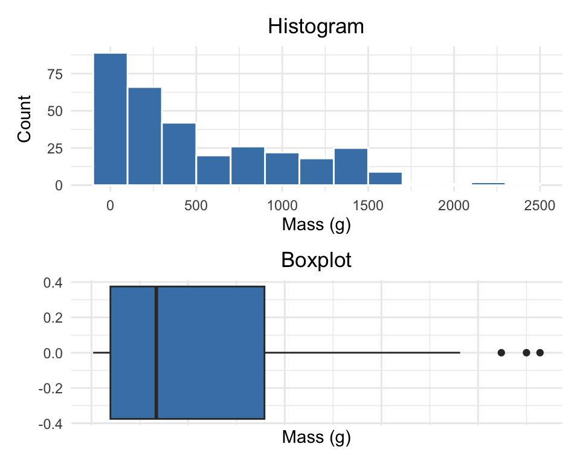
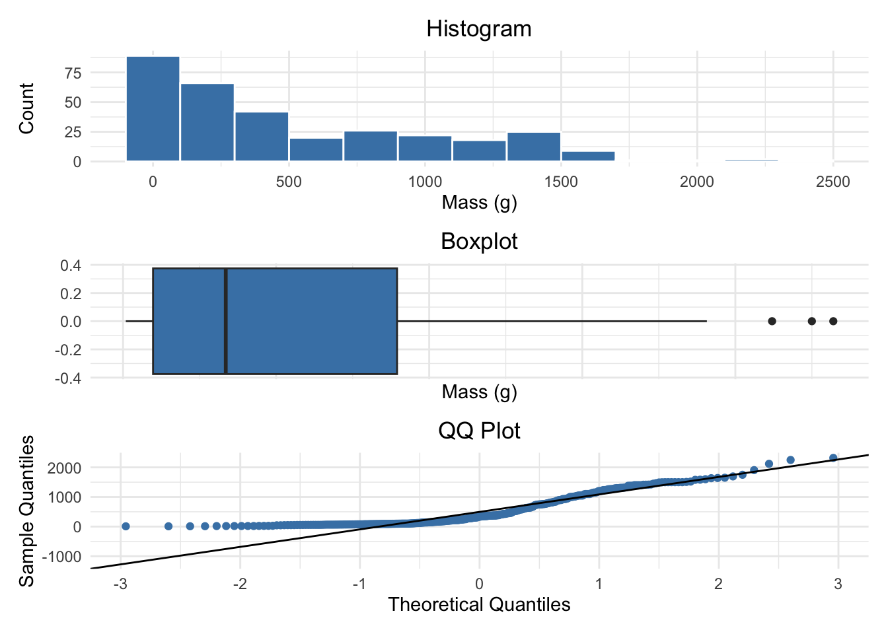
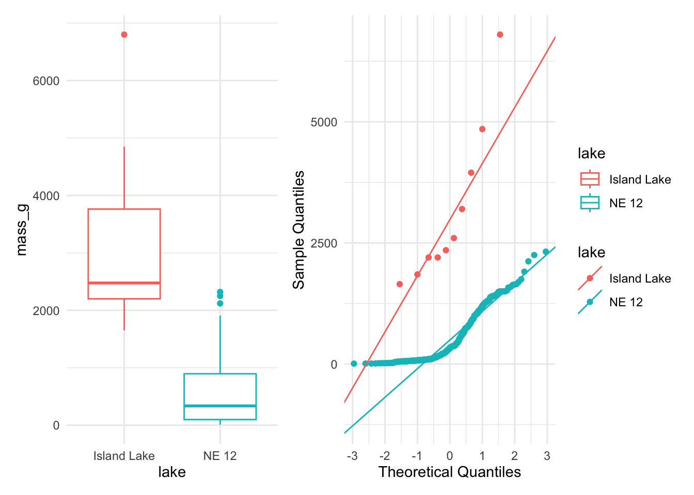
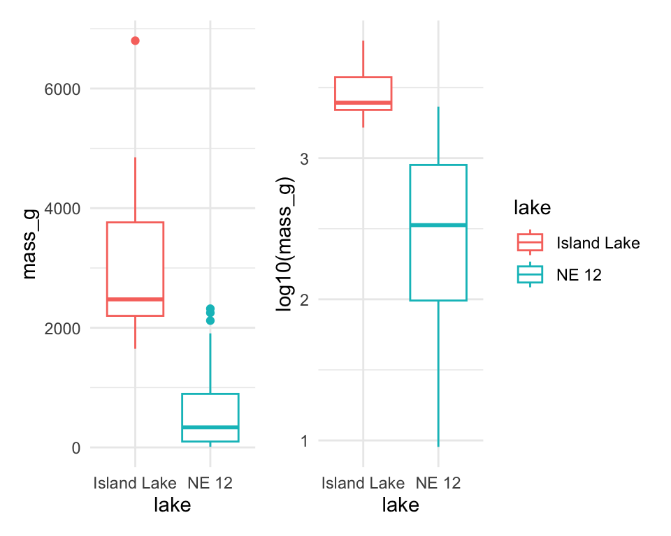

# Install packages if needed (uncomment if necessary)
# install.packages("readr")
# install.packages("tidyverse")
# install.packages("car")
# install.packages("here")
# Load libraries
library(car) # For diagnostic tests
library(patchwork)
library(tidyverse) # For data manipulation and visualizationLecture 07
Lecture 6 - A Brief review
- Hypotheses
- 1- and 2-sided T tests
- Power - what is it and why talk about it.
- Assumptions of parametric tests
- What next — WHEN ASSUMPTIONS FAIL!
we will always cover parametric tests
then we will cover non parametric approaches
later on we will explore other approaches to use the appropriate underlying distribution that is not normal but Poisson or other

Lecture 7 overview
What we will cover today:
- What are the assumptions again and how do you assess them
- What to do when assumptions fail
- Robust tests
- Rank-based tests
- Permutation tests
Lets work with the Lake Trout data as the weights are pretty cool and the assumptions may or may not hold
This is easily translated into any of the other dataframes you might want to use
lake trout

Setting Up Our Analysis
Loading Lake Trout Data
# the stuff above controls the output and is also set at the top so dont need here
# Load the pine needle data
# Use here() function to specify the path
lt_df <- read_csv("data/lake_trout.csv")
# Examine the first few rows
head(lt_df)# A tibble: 6 × 5
sampling_site species length_mm mass_g lake
<chr> <chr> <dbl> <dbl> <chr>
1 I8 lake trout 515 1400 I8
2 I8 lake trout 468 1100 I8
3 I8 lake trout 527 1550 I8
4 I8 lake trout 525 1350 I8
5 I8 lake trout 517 1300 I8
6 I8 lake trout 607 2100 I8 # I had accdentally asked you to do mode in HW2 - wiht out telling you how...
# here is one approach
lt_df %>%
filter(!is.na(mass_g)) %>%
group_by(lake, mass_g) %>%
summarise(count = n(), .groups = "drop_last") %>%
arrange(desc(count)) %>%
slice(1) %>%
select(-count) %>%
rename(mode_mass = mass_g)# A tibble: 6 × 2
# Groups: lake [6]
lake mode_mass
<chr> <dbl>
1 I8 1000
2 Island Lake 2200
3 N 01 1000
4 NE 12 90
5 NE 14 1150
6 Toolik 340Parametric versus non-parametric tests
T-tests are parametric tests
- Parametric tests:
- specify/assume probability distribution from which parameters came
- Basic assumptions of parametric t-tests:
Random sampling
Normality
Equal variance (or Welches T Test)
No outliers
- Non-parametric tests: no assumption about probability distribution/normality
- Mukasa et al 2021 DOI: 10.4236/ojbm.2021.93081

Assumptions of parametric tests - Overview
- If assumptions of parametric test violated, test becomes unreliable
- This is because test statistic may no longer follow distribution
- Most parametric tests robust to mild/moderate violations of normality assumptions

Assumptions of parametric tests - Random Sampling
- Basic assumptions of parametric t-tests:
- Random sampling
- Normality
- Equal variance
- No outliers
- Random sampling:
samples are randomly collected from populations; part of experimental design
Necessary for sample -> population inference

Assumptions of parametric tests - Normality Testing
Basic assumptions of parametric t-tests:
- Normality
- equal variance
- random sampling
- no outliers
- Lets do the above for one lake -
NE 12as if we were going to do a one sample T Test- we need to make a new dataframe with NE 12 data only called
ne12_data - how do you do this?
- we need to make a new dataframe with NE 12 data only called
- Normality: Samples from normally distributed population
- Graphical tests: histograms, dotplots, boxplots, qq-plots
- “Formal” tests: Shapiro-Wilk test - sometimes not useful

Shapiro-Wilk Test for Normality
Basic assumptions of parametric t-tests:
Normality
equal variance
random sampling
no outliers
Lets do the above for one lake -
NE 12as if we were going to do a one sample T Test- we need to make a new dataframe with NE 12 data only called
ne12_data - how do you do this?
- we need to make a new dataframe with NE 12 data only called
Normality: Samples from normally distributed population
- Graphical tests: histograms, dotplots, boxplots, qq-plots
- “Formal” tests: Shapiro-Wilk test - sometimes not useful
“Null hypothesis is that data is normally distributed”
Shapiro-Wilk normality test
data: ne12_data$length_mm
W = 0.94528, p-value = 1.56e-09Testing Equal Variance Assumption
Basic assumptions of parametric t-tests:
- Normality
- equal variance
- random sampling
- no outliers
Equal variance: samples are from populations with similar degree of variability
- Graphical tests: boxplots
- “Formal” tests: F-ratio test
- When samples sizes equal
- Parametric tests most robust to violations of normality
- Less so for equal variation assumptions

Testing for Outliers
- Basic assumptions of parametric t-tests:
- Normality
- equal variance
- random sampling
- no outliers
- No outliers: no “extreme” values that are very different from rest of sample
- Graphical tests: boxplots, histograms
- “Formal tests”: Grubb’s test - no one really does this
- Note: outliers a problem for non-parametric tests as well

Alternative Tests When Assumptions Fail
- What if T Test assumptions fail?
- Alternative tests, with more relaxed assumptions, are available
- In which case would you use the following tests?
- Welch’s t-test: when distribution normal but variance unequal
- Mann-Whitney-Wilcoxon test: when distribution not normal and/or outliers are present (but both groups should still have similar distributions and ~equal variance)
- Permutation test for two samples: when distribution not normal (but both groups should still have similar distributions and ~equal variance)

Understanding QQ-Plots
QQ-plots: tool for assessing normality
- On x- theoretical quantiles from SND
- On y- ordered sample values
- Deviation from normal can be detected as deviation from straight line

Data Transformations
- In some cases, data can be mathematically “transformed” to meet assumptions of parametric tests
- this can be done in r and usually involves
- log10 transformations
- square root transformations
- and many others… I will have a description soon
Robust tests - Welch’s T-Test
- Welch’s t-test
common “robust” test for means of two populations
Robust to violation of equal variance assumption, deals better with unequal sample size
Parametric test (assumes normal distribution)
Calculates a t statistic but recalculates df based on samples sizes and s

Comparing Standard T-Test vs Welch’s T-Test
Lets compare a parametric T-Test to a Welch’s t-test
- T-Test is:
- t.test(y1, y2, var.equal = TRUE, paired = FALSE)
- Welch’s T-Test is:
- t.test(y1, y2, var.equal = FALSE, paired = FALSE)
- T-Test is:
[1] "Standard t-test results for mass_g:"
Two Sample t-test
data: mass_g by lake
t = 14.181, df = 330, p-value < 2.2e-16
alternative hypothesis: true difference in means between group Island Lake and group NE 12 is not equal to 0
95 percent confidence interval:
2266.304 2996.360
sample estimates:
mean in group Island Lake mean in group NE 12
3165.0000 533.6677 [1] "Welch's t-test results for mass_g:"
Welch Two Sample t-test
data: mass_g by lake
t = 5.1368, df = 9.0578, p-value = 0.0006016
alternative hypothesis: true difference in means between group Island Lake and group NE 12 is not equal to 0
95 percent confidence interval:
1473.676 3788.989
sample estimates:
mean in group Island Lake mean in group NE 12
3165.0000 533.6677 Rank-Based Tests
Rank-based tests: no assumptions about distribution (non-parametric)
Ranks of data: observations assigned ranks, sums (and signs for paired tests) of ranks for groups compared
Mann-Whitney U test common alternative to independent samples t-test
Wilcoxon signed-rank test is alternative to paired t-test
Assumptions: similar distributions for groups, equal variance
Less power than parametric tests
Best when normality assumption can not be met by transformation (weird distribution) or large outliers
Mann-Whitney U Test Results
[1] "Mann-Whitney U test results mass_g:"
Wilcoxon rank sum test with continuity correction
data: mass_g by lake
W = 3205.5, p-value = 9.506e-08
alternative hypothesis: true location shift is not equal to 0Permutation Tests - Concept
- Permutation tests based on resampling: reshuffling of original data
- Resampling allows parameter estimation when distribution unknown, including SEs and CIs of statistics (means, medians)
- Common approach is bootstrap: resample sample with replacement many times, recalculate sample stats
- Use the
permpackage - Ho: µA = µB
- Ha: µA ≠µB
- Calculates the difference ∆ in means between two groups

Permutation Tests - Method
- Randomly reshuffle observations between groups (keeping n~NE 12~=323 and nIsland=10), calculate ∆
- Repeat >1,000 times
- Record proportion of the different means i
- This is equivalent to p-value and can be used in “traditional” H test framework
- For a graphical explanation:
Permutation Test Implementation
- In R (using ‘perm’ package):
- Assumptions: both groups have similar distribution; equal variance
library(perm)
# Prepare data for permutation test
ne12_perm_data <- isl_ne12_df %>%
filter(lake == "NE 12") %>%
pull(length_mm)
# Randomly sample exactly 25 observations from NE 12 (set seed for reproducibility)
set.seed(123)
ne12_perm_data <- sample(ne12_perm_data, size = 25, replace = FALSE)
island_perm_data <- isl_ne12_df %>%
filter(lake == "Island Lake") %>%
pull(length_mm)
# Calculate the observed difference in means
observed_diff <- mean(ne12_perm_data, na.rm = TRUE) - mean(island_perm_data, na.rm = TRUE)
# Perform permutation test for difference in means using perm package
permTS(ne12_perm_data, island_perm_data,
alternative = "two.sided",
method = "exact.mc",
control = permControl(nmc = 10000))
Exact Permutation Test Estimated by Monte Carlo
data: GROUP 1 and GROUP 2
p-value = 2e-04
alternative hypothesis: true mean GROUP 1 - mean GROUP 2 is not equal to 0
sample estimates:
mean GROUP 1 - mean GROUP 2
-333.08
p-value estimated from 10000 Monte Carlo replications
99 percent confidence interval on p-value:
0.000000000 0.001059383 Summary - Testing Assumptions
Testing Assumptions of Parametric Tests
Key Assumptions
- Random sampling: Samples are randomly collected from populations
- Normality: Data follows a normal distribution
- Equal variance: Samples come from populations with similar variability
- No outliers: No extreme values that can skew results
Assessing Assumptions
- Key to do every time
- Should acknowledge in manuscript
Summary - Data Transformations
Data Transformations
When assumptions aren’t met, transformations may help normalize data:
- Log transformation:
log10(x)- Useful for right-skewed data, multiplicative effects - Square root:
sqrt(x)- Useful for count data, moderately right-skewed distributions - Box-Cox: More flexible family of power transformations
- More specialized transformations especially for percentages or proportions
Summary - Parametric Test Options
1. Standard T-Test
Strengths:
- High statistical power when assumptions are met
- - Well understood and widely accepted
Weaknesses:
- - Sensitive to violations of normality, equal variance
- - Heavily influenced by outliers
2. Welch’s T-Test
- Strengths:
- - Robust to violations of equal variance assumption
- - Handles unequal sample sizes well
- - Still parametric (assumes normality)
- Weaknesses:
- - Slightly less powerful than standard t-test when variances are equal
- - Still assumes normal distribution
Summary - Non-Parametric Options
3. Mann-Whitney-Wilcoxon Test
- Strengths:
- - Non-parametric: doesn’t assume normal distribution
- - Robust against outliers
- - Works with ordinal data
- Weaknesses:
- - Less statistical power than parametric tests
- - Still assumes similar distributions and approximate equal variance
- - Tests median differences rather than mean differences
4. Permutation Tests
- Strengths:
- - Distribution-free: doesn’t assume a specific distribution
- - Can be applied to many types of test statistics
- - Handles small sample sizes well
- - Directly estimates p-values through resampling
- Weaknesses:
- - Computationally intensive
- - Assumes exchangeability under the null hypothesis
- - Requires similar distributions and equal variance
Key Takeaway
Statistical tests have different strengths and assumptions. The choice should be guided by your data characteristics, not just convenience. Always visualize your data before deciding on the appropriate test.